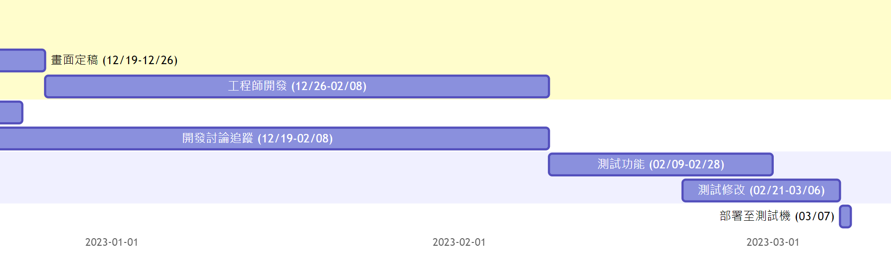
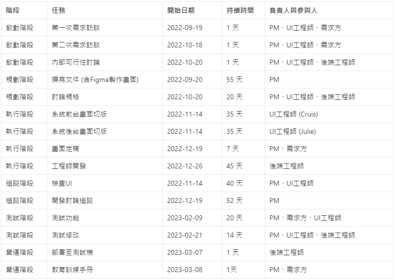

中華資訊與科技教育學會/投審稿系統/客製化專案

- 背景介紹：
此專案核心目標是透過投審稿系統實現「研討會論文」與「期刊論文」的兩種不同投審稿流程。 原本繁複的紙本作業轉為線上進行，以確保審稿過程符合規範，並與需求方一起規劃出一套系統化流程，不僅改善人工審查效率，也能保有研究誠信。
-
角色與職責： 擔任project manager，負責內容包含需求收集、需求訪談、市場調查以及功能規劃，撰寫產品需求文件（PRD），並以此為基礎進行wireframe與mockup的設計，進而產出可操作的prototype，與前後端工程師密切溝通，確保工程師們理解並能實現所需功能。執行過程中，負責時程控管，進行內外部測試，追蹤異常處理。最後進行內外部教育訓練，以便未來順利移交專案給客服團隊。
-
團隊成員：一位業務、兩位UI工程師、一位後端工程師、一位工程師主管、一位客服專員，內部溝通對象總共六位。
-
客戶窗口：一位業務助理、一位業務講師、一位助理主管，外部溝通對象總共三位。
-
執行細節：
(1) 功能地圖：需求訪談將前台需要的功能列出，以層級結構的方式描繪出，從整體系統的高層功能開始，逐步細分為更具體的子功能或模組，如下圖所示，透過此方式能清楚地描繪出不同使用者在系統中的操作流程和功能需求。


(2) 流程圖：將某一功能中使用者會經歷的過程，使用各種形狀的圖形（如矩形、菱形、圓形等）來表示不同的步驟或決策點，流程圖可以盤點每個步驟，並在討論時不會遺漏任何重要細節，如左圖與上圖所示。
(3) 使用工具：規劃與討論-google文件、Miro、figma、Chat Gpt 3.5。
- 時間管理：時間控管-Mermaid Live Editor、Notion。
透過Mermaid Live Editor和Notion的結合，以清晰的方式視覺化整體時間框架，包含專案開始和結束日期，同時詳列每個任務的具體步驟、時程安排以及參與人。
這種組合方式幫助團隊成員能清楚了解整體進度和各自負責的任務，也方便持續追蹤專案進度，確保任務按時完成。
使用 Mermaid Live Editor 抓大範圍時間

Notion 詳列執行細節的時間

專案的最終目標是建置滿足客戶需求的系統。
營運階段的開始是追蹤系統的後續使用情況，積極維持客戶關係，尋求後續合作機會。
- 工作追蹤：問題管理-kayako ticket、trello。
公司的Kayako的Ticket系統，通常被作為回報給主管的進度追蹤工具。 開啟動會議時，召集大家參與，與主管討論並指派團隊成員，確定開工後，細部討論會透過Trello，唯有發生衝突或是需要請示主管意見時，才會在Ticket告知。
這樣的流程能確保主管掌握專案的整體進度和方向，也減少不必要的匯報，做好向上管理。
透過Trello幫助團隊追蹤和解決問題，大致流程是 創建卡片(敘述問題)、指派負責人、討論解決問題、追蹤進度、定期檢查項目，確保每個問題都能得到即時的關注和處理。
- 專案連結：